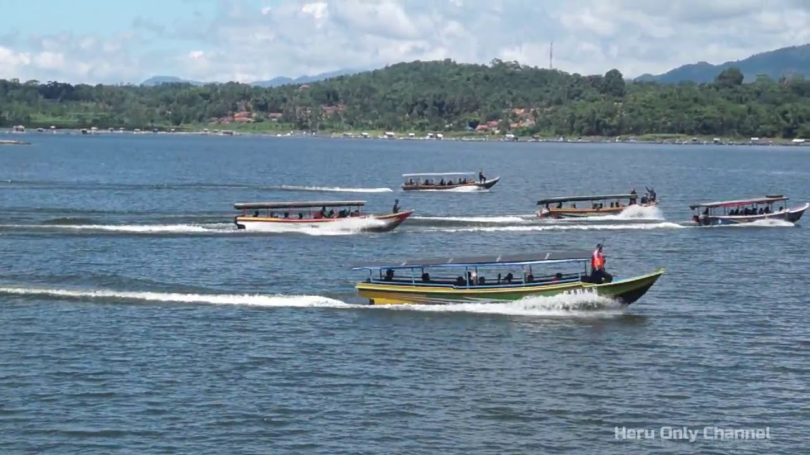
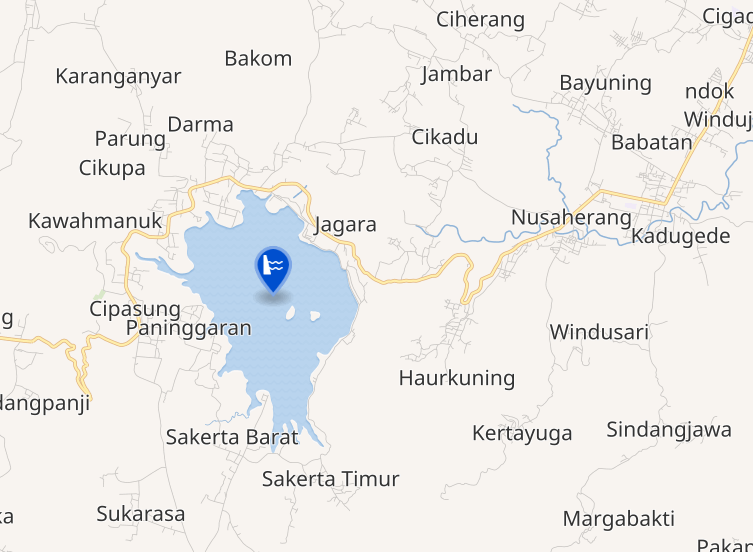

Mengenal Waduk Darma

Tentang Waduk Darma
Waduk Darma merupakan salah satu destinasi wisata populer di Kuningan, Jawa Barat. Waduk ini menawarkan pemandangan alam yang indah dengan air yang jernih dan suasana yang sejuk.

Aktivitas di Waduk Darma
Di Waduk Darma, Anda bisa menikmati berbagai aktivitas seperti memancing, berperahu, bersepeda, atau bersantai menikmati udara segar.

Keindahan Alam
Waduk Darma dikelilingi perbukitan hijau yang memukau, menjadikannya tempat yang sempurna untuk melarikan diri dari hiruk-pikuk kota.

Lokasi dan Akses
Waduk Darma terletak di Kabupaten Kuningan, Jawa Barat, sekitar 37 km dari Cirebon. Akses mudah dengan kendaraan pribadi atau transportasi umum.